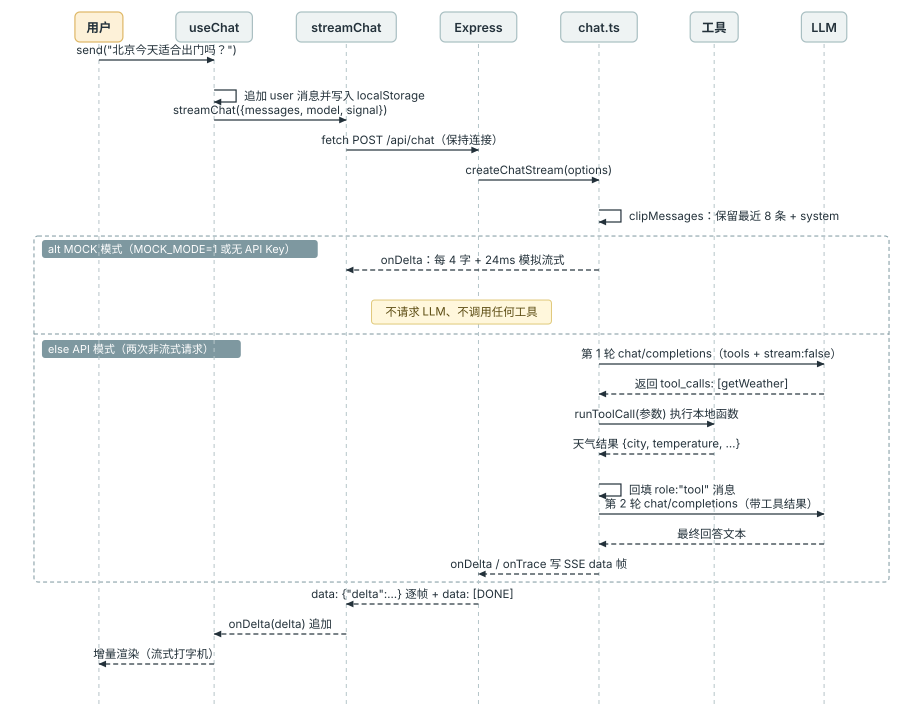
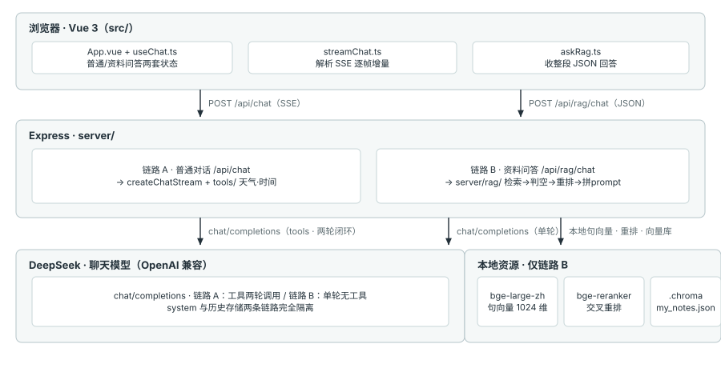
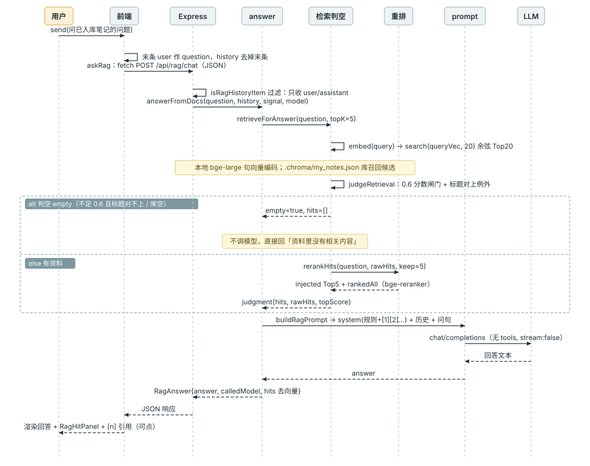
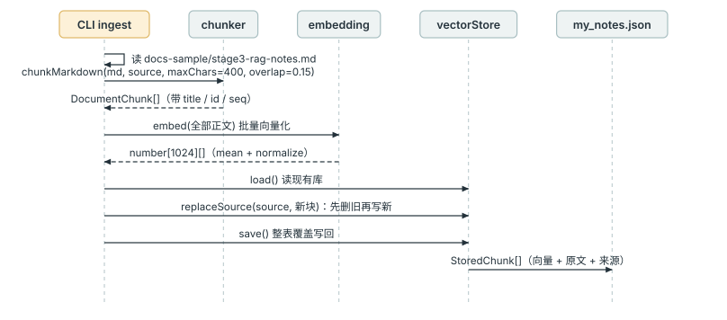
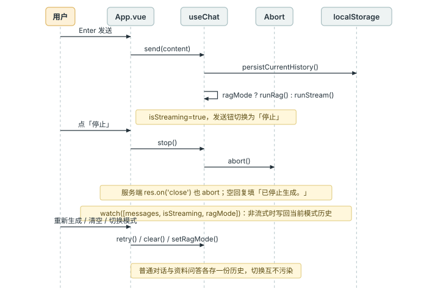
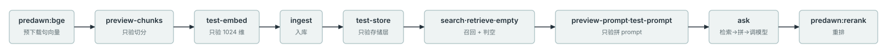

step1-chat · 模块时序图
由 scripts/render-seq-svg.mjs 直接生成的标准 SVG 时序图，无需任何渲染器，浏览器 / Quick Look 直接打开。源码数据在 scripts/seq-data.mjs。
另有泳道流程图（含方法名 + Token/Guard/Trace）：见 docs/flows-index.html。
图 2 · 链路 A：普通对话（SSE + 工具调用）

tool calling 闭环：决定 → 执行 → 回填 → 再问，全程非流式两次请求；前端每次读到 data 帧就渲染一段。
图 1 · 架构与数据边界

两条链路共用前端状态与 Express，但接口、协议、system 与历史存储完全隔离；本地模型与向量库只服务资料链路。
图 3 · 链路 B：资料问答（RAG 流水线）

空结果不消耗模型调用；RagHitView 去掉 1024 维向量再回前端，引用编号只认本次注入的 promptIndex。
图 4 · 离线入库 rag:ingest

同一 source 只允许一份数据：replaceSource 先删旧再写新，禁止直接 push 造成新旧两版并存。
图 5 · 状态与生命周期

watch([messages, isStreaming, ragMode]) 在非流式时把当前模式的历史写回 localStorage，普通对话与资料问答各一份。
图 6 · 单点验证脚本顺序

每条命令只练一个环节，失败只重跑那一条；入库成功 ≠ 检索合格，检索有命中 ≠ 可以注入。